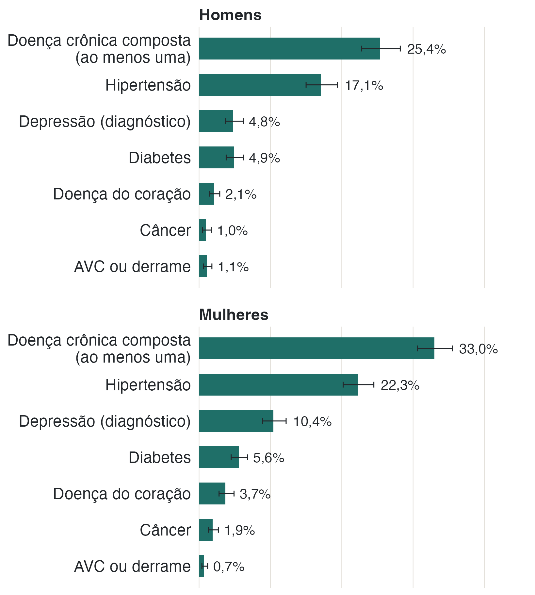
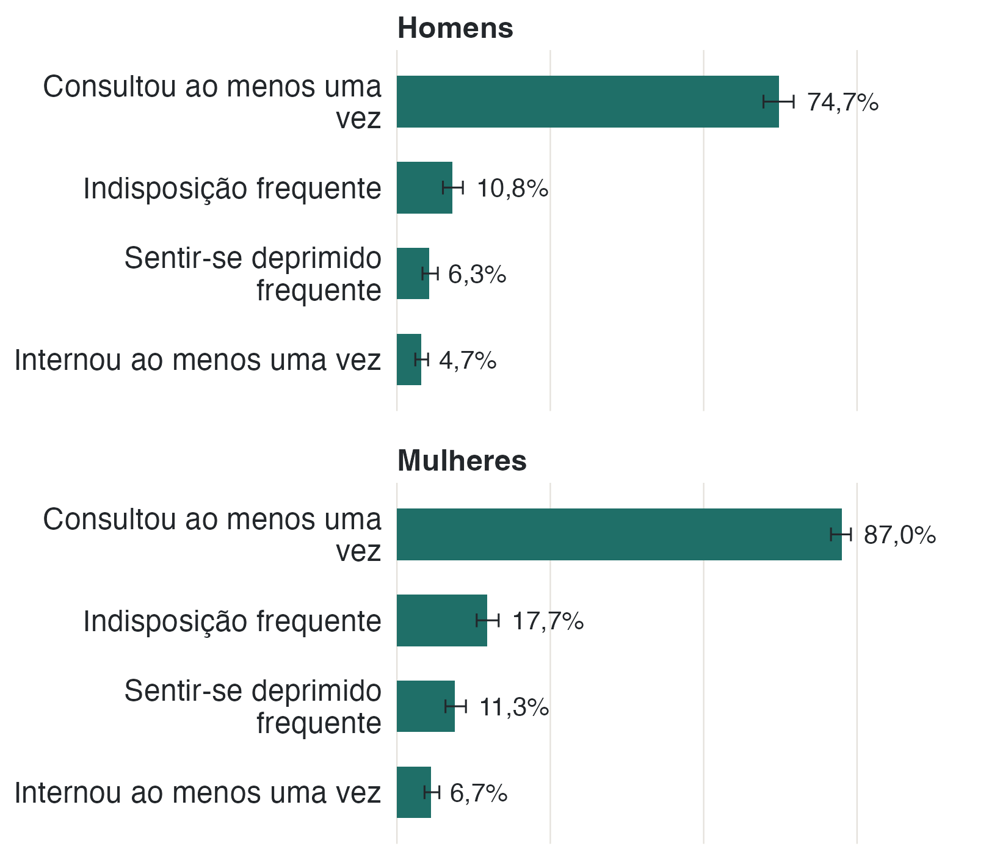
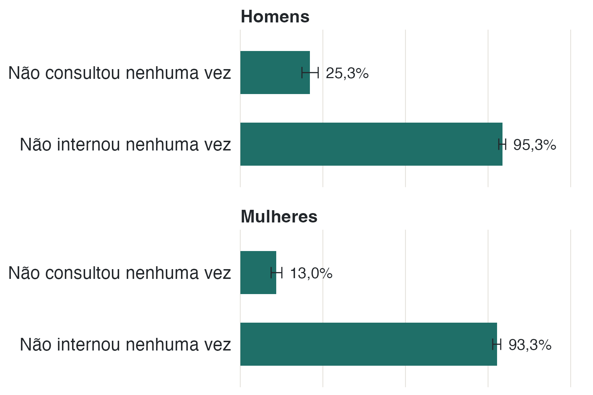

Como está a saúde
A análise reúne diagnósticos de doenças crônicas, relatos sobre saúde e uso de serviços. As informações foram fornecidas pelas próprias pessoas: não houve consulta a prontuários para confirmar diagnósticos ou atendimentos.
19,9% têm hipertensão diagnosticada IC 95% 18,4–21,5
5,2% têm diabetes diagnosticada IC 95% 4,5–6,1
7,8% têm diagnóstico de depressão IC 95% 6,8–9,0
3,11 consultas médicas por pessoa em 12 meses IC 95% 2,87–3,34

Quase três em cada dez relatam diagnóstico de doença crônica
A medida composta de doença crônica reúne seis condições: hipertensão, diabetes, doença do coração, AVC, depressão e câncer. Ela indica se a pessoa relatou diagnóstico de pelo menos uma delas. A prevalência estimada é de 29,5% (IC 95% 27,7–31,4).
A hipertensão é a mais frequente (19,9%; 18,4–21,5), seguida de depressão (7,8%; 6,8–9,0) e diabetes (5,2%; 4,5–6,1). Doença do coração (2,9%), câncer (1,5%) e AVC (0,9%) são menos frequentes, com estimativas menos precisas e intervalos relativamente mais largos.

Consultas são muito mais comuns que internações
Em 12 meses, 81,3% (IC 95% 79,5–82,9) consultaram um médico ao menos uma vez, e 5,8% (4,9–6,8) foram internados. A média foi de 3,11 consultas por pessoa (2,87–3,34); metade consultou até duas vezes e 90% tiveram seis consultas ou menos. A média de internações foi de 0,08 por pessoa (0,06–0,10).
Em 12 meses, 18,7% não consultaram nenhuma vez e 94,2% não foram internados. As internações, portanto, ocorreram em uma parcela pequena da população.

Pessoas sem consultas ou internações. O questionário não pergunta quantas vezes a pessoa usou o serviço se ela respondeu que não o utilizou no último ano. Nesses casos, a quantidade foi considerada zero, e não dado ausente.
Respostas ausentes. A medida composta fica sem estimativa quando falta resposta para alguma das seis condições. Isso ocorreu com 157 pessoas (4,8% do recorte). Esses valores não foram preenchidos; nas doenças individuais, a proporção de respostas ausentes é menor.
Diagnósticos relatados. A PNS pergunta se algum médico já informou à pessoa que ela tem determinada doença. Como não há confirmação em prontuário ou exame, os resultados também podem refletir diferenças no acesso aos serviços de saúde.